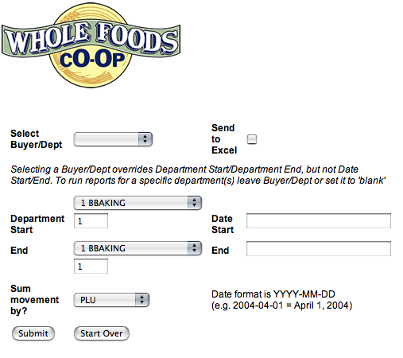
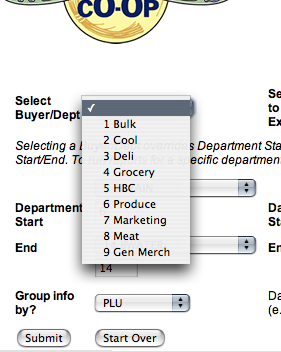
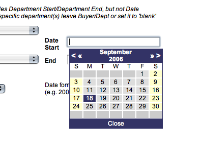
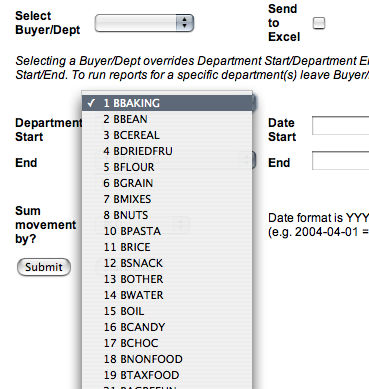
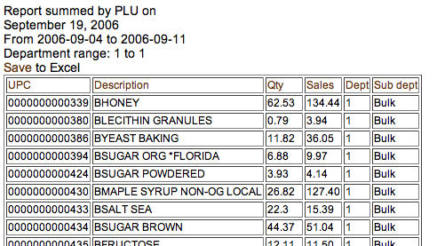

How to use the Movement Reporting Page
Below is a screenshot of the interface for the Movement Report Page. The page can be accessed directly by navigating to http://key/queries/deliQuery.php.

Definitions:
Buyer/Dept - All departments/items associated with a particular buyer or department manager.
Send to Excel - Generate an Excel document from report, rather than display report.
Department Start/End - Report will include the movement of all items in departments included in range.
Date Start/End - Report will include all movement on all days included in range.
Sum movement by? - Determines what category to sum movement information
To generate a movement report for all departments for a Buyer/Dept
Select Buyer/Dept interested in.

Once you have selected a Buyer/Dept, selecting a Department Start/End is no longer considered in generating the report. Next, select a start date and end date for the report.

Lastly, you need to decide how you would like the movement summed. Summing by PLU will show movement at the item level, summing by department will show total movement in departments selected with buyer/dept, and summing by date will sum all movement in the selected buyer/dept manager's departments
To generate movement report for specific department range
This report is generally the same as by Buyer/Dept, except that the Buyer/Dept must be set to the blank row at the top of the select list. If a Buyer/Dept is selected it will override any department selections made. Department ranges may be set by either entering department numbers, or by selecting departments from drop down menus.

Once the department range is set, a date range needs to be set per instructions above, as well as, setting sum by criteria.
Sending report to Excel
There are two ways of sending this report to Excel. The first is to simply click the 'Send to Excel' checkbox BEFORE running the report. 
The other method is to click the 'Save to Excel' link on the resulting report without selecting the 'Send to Excel' checkbox before running the report

Using the Movement Report
The image above shows the look of the movement report. The header for the report explains how it is currently summed, the date of the report, the date range and the either the Buyer/Dept or the department range. As explained above, the report may also be sent to Excel, by clicking the Save to Excel' link. The default sort for this report is by UPC if report is summed by PLU/UPC, date if summed by date, and by department if summed by department. The column headers are all links to sort the report. Clicking the same column header twice will sort the report in the reverse direction from its current sort.